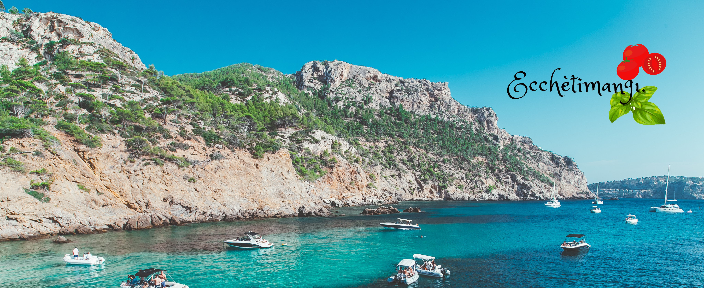

Cuciniamo e sperimentiamo dal 2003, per amore di una terra,la puglia. Il nostro è un semplice blog di cucina tipica, nato dalla passione di tre amici che si ripropone di tramandare la tradizione, consigliando e utilizzando i migliori ingredienti. Ma che stiamo aspettando? Facciamo un salto in cucina!

Orecchiette alle rape

Impepata di cozze

Polpo all'acqua soje